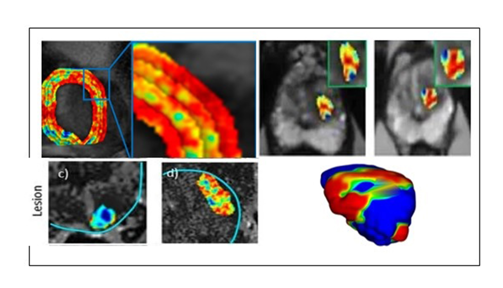
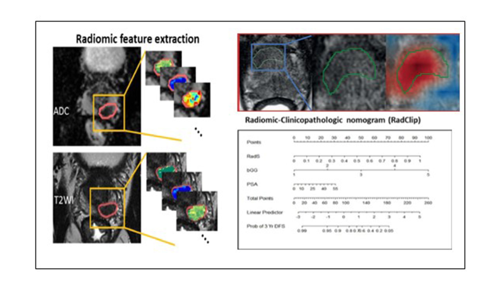
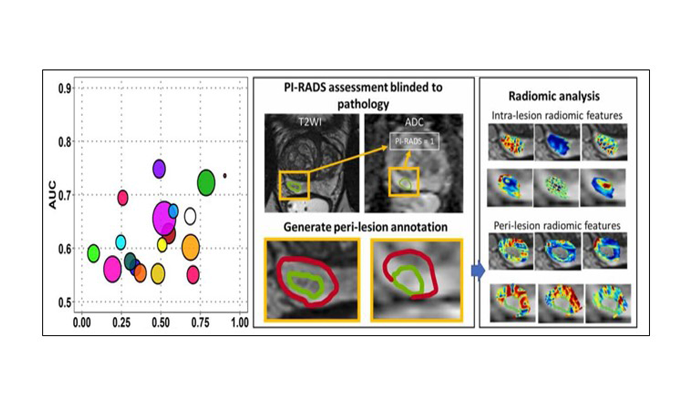
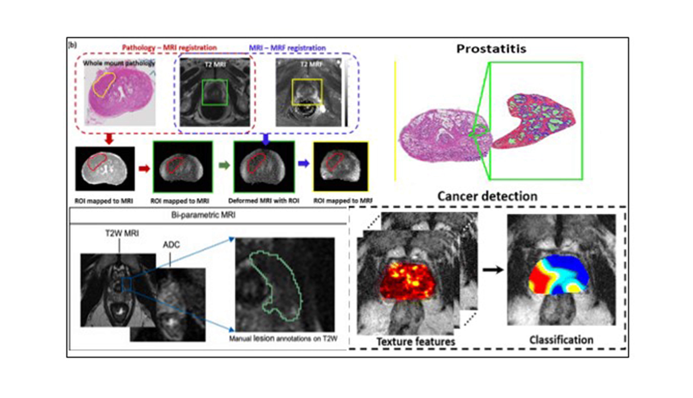

Our Research Focus
Explore our published research contributions to the fields of educational technology, human-computer interaction, and artificial intelligence.
Computational Imaging Biomarkers Leveraging Computer Vision and Image Processing
The project focuses on advancing prostate cancer (PCa) risk stratification and progression monitoring through radiomics-based approaches. By analyzing bi-parametric MRI (T2-weighted and diffusion-weighted imaging), the studies explore intra- and peri-tumoral radiomic features to enhance risk classification based on D’Amico's system, achieving improved predictive accuracy over conventional methods like PI-RADS. Additionally, the project identifies unique prostate shape patterns associated with biochemical recurrence, highlighting the peri-tumoral region's diagnostic potential. Furthermore, delta radiomics like quantifying temporal changes in imaging features are linked to pathologic upgrades in PCa patients under active surveillance, outperforming traditional clinical variables. Collectively, these studies demonstrate the power of integrating advanced imaging biomarkers with machine learning for personalized and precise PCa management, laying the groundwork for broader clinical applications.

References:
- Algohary, A., Shiradkar, R., Pahwa, S., Purysko, A., Verma, S., Moses, D., Shnier, R., Haynes, A., Delprado, W., Thompson, J., Tirumani, S., Mahran, A., Rastinehad, A. R., Ponsky, L., Stricker, P. D., & Madabhushi, A. Read Paper
- Ghose, S., Shiradkar, R., Rusu, M., Mitra, J., Thawani, R., Feldman, M., Gupta, A. C., Purysko, A. S., Ponsky, L., & Madabhushi, A. Read Paper
- Midya, A., Hiremath, A., Huber, J., Viswanathan, V. S., Omil-Lima, D., Mahran, A., Bittencourt, L. K., Tirumani, S. H., Ponsky, L., Shiradkar, R., & Madabhushi, A. Read Paper
- Radiomics
- Prostate Cancer
- MRI
- Machine Learning
AI and Medical Imaging-Based Clinical Decision Support Tools for Disease Diagnosis and Prognosis
The project concentartes on leveraging advanced imaging and AI-driven analytics to improve prostate cancer (PCa) risk stratification, prognosis, and treatment planning. A retrospective study on integrated nomogram develops the ClaD nomogram, integrating deep learning, PI-RADS scoring, and clinical variables, which significantly enhances the identification of clinically significant PCa and prediction of biochemical recurrence compared to conventional models while the study on imaging nomogram introduces the RadClip nomogram, a radiomics-clinicopathologic model using bi-parametric MRI to pre-operatively predict biochemical recurrence-free survival and adverse pathology, outperforming existing prognostic tools like CAPRA and Decipher. Together, these studies showcase the potential of AI-enhanced imaging biomarkers and predictive models in aiding personalized and precise PCa management, enabling better therapeutic decisions.

References:
- Hiremath, A., Shiradkar, R., Fu, P., Mahran, A., Rastinehad, A. R., Tewari, A., Tirumani, S. H., Purysko, A., Ponsky, L., & Madabhushi, A. Read Paper
- Li, L., Shiradkar, R., Leo, P., Algohary, A., Fu, P., Tirumani, S. H., Mahran, A., Buzzy, C., Obmann, V. C., Mansoori, B., El-Fahmawi, A., Shahait, M., Tewari, A., Magi-Galluzzi, C., Lee, D., Lal, P., Ponsky, L., Klein, E., Purysko, A. S., & Madabhushi, A. Read Paper
- AI
- Decision Support
- Prognosis
- Nomograms
Tools to Test Reproducibility, Bias, and Translation of Medical Imaging AI
This project is about evaluating the reliability, sensitivity, and reproducibility of AI-driven tools in medical imaging for prostate cancer (PCa) diagnosis and risk stratification. The studies assess the test-retest repeatability of a U-Net deep learning model in detecting and segmenting clinically significant PCa using diffusion-weighted imaging, demonstrating high repeatability and robustness without systematic bias and short-term repeatability of radiomics and machine learning methods on prostate DWI, identifying high-performing features with consistent classification performance. It also investigates the impact of inter-reader variations in lesion delineation on CNN-based PCa risk stratification, highlighting the models' moderate sensitivity to annotation variability and the importance of comprehensive region-of-interest (ROI) delineations. Together, these studies provide critical insights into the reproducibility and generalizability of AI models, paving the way for reliable clinical translation of medical imaging AI tools.

References:
- Hiremath, A., Shiradkar, R., Merisaari, H., Prasanna, P., Ettala, O., Taimen, P., Aronen, H. J., Boström, P. J., Jambor, I., & Madabhushi, A. Read Paper
- Merisaari, H., Taimen, P., Shiradkar, R., Ettala, O., Pesola, M., Saunavaara, J., Boström, P. J., Madabhushi, A., Aronen, H. J., & Jambor, I. Read Paper
- Roge, A., Hiremath, A., Sobota, M., Tirumani, S. H., Bittencourt, L. K., Ream, J., Ward, R., Olaniyan, H., Verma, S., Purysko, A., Madabhushi, A., & Shiradkar, R. Read Paper
- Radiomics
- Prostate Cancer
- MRI
- Machine Learning
Multi-Modal Health Data Integration
The project refers to leveraging advanced radiology, pathology, and computational frameworks to enhance prostate cancer diagnosis, prognosis, and treatment planning. By integrating radiomics from pre-treatment MRI with pathomics from post-surgical pathology, the studies demonstrate improved prognostication for outcomes such as rising PSA levels and extraprostatic extension. Magnetic resonance fingerprinting (MRF) further correlates imaging biomarkers with tissue composition, distinguishing prostate cancer, prostatitis, and normal tissues. Additionally, a computational framework (Rad-TRaP) combines radiomics with deformable co-registration tools to generate targeted radiotherapy treatment plans that optimize dosage to cancerous regions while sparing healthy tissues. This comprehensive approach highlights the power of combining multi-modal data, deep learning, and machine learning to improve personalized care and clinical decision-making in prostate cancer management.

References:
- Hiremath, A., Corredor, G., Li, L., Leo, P., Magi-Galluzzi, C., Elliott, R., Purysko, A., Shiradkar, R., & Madabhushi, A. Read Paper
- Shiradkar, R., Panda, A., Leo, P., Janowczyk, A., Farre, X., Janaki, N., Li, L., Pahwa, S., Mahran, A., Buzzy, C., Fu, P., Elliott, R., MacLennan, G., Ponsky, L., Gulani, V., & Madabhushi, A. Read Paper
- Shiradkar, R., Podder, T. K., Algohary, A., Viswanath, S., Ellis, R. J., & Madabhushi, A. Read Paper
- Multi-Modal
- Radiomics
- Pathomics
- Treatment Planning